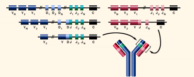
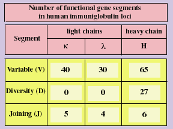

|
Tutorial to help answer the question:
The ability to produce billions of different antibodies in humans results from:
| A. |
The presence of billions of complete antibody genes in B cells. |
| B. |
The fact that both T cells and B cells contain antibody genes. |
| C. |
The production of variable regions of light and heavy antibody genes by DNA
rearrangement. |
| D. |
The fact that a single antibody gene produces an antibody capable of billions
of different three dimensional structures and the ability to combine with any
antigen. |
Tutorial
 |
An antibody immunoglobulin is a "Y" shaped molecule made
up of two identical "light" and "heavy" chains of amino acids.
The variable region includes the N-terminal 110-130 amino acids
of the light and heavy chains, and is responsible for binding
to antigen. The constant region is the C-terminal end and contains
similar amino acids for each class of antibody. Light chains
may be lambda or kappa. The five major classes of heavy chain
are IgM, IgG, IgA, IgD, and IgE. Each of these classes differ
in their locations in our body and how they stimulate the innate
system to remove antigen. |
| The immune system creates billions of different antibodies with a limited
number of genes by rearranging DNA segments during B cell development, prior to
antigen exposure. Mutation can also increase genetic variation in antibodies. |
|

|
| When a stem cell changes to become a B cell, DNA segments
for both heavy (VDJ) and light (VJ) chains are randomly combined.
Each B cell ends up with functional genes for making one light
and one heavy chain coding for an antibody as a membrane-bound
receptor. Antibody specificity depends on the gene fragments
used. Antibodies are produced that can react with almost any
chemical structure in nature, including our own proteins. |
So how much variation is possible through recombining gene fragments?
|  |
Over 15,000,000 combinations of variable, diversity and joining
gene segments are possible. Imprecise recombination and mutation increase the
variability into billions of possible combinations. |
|